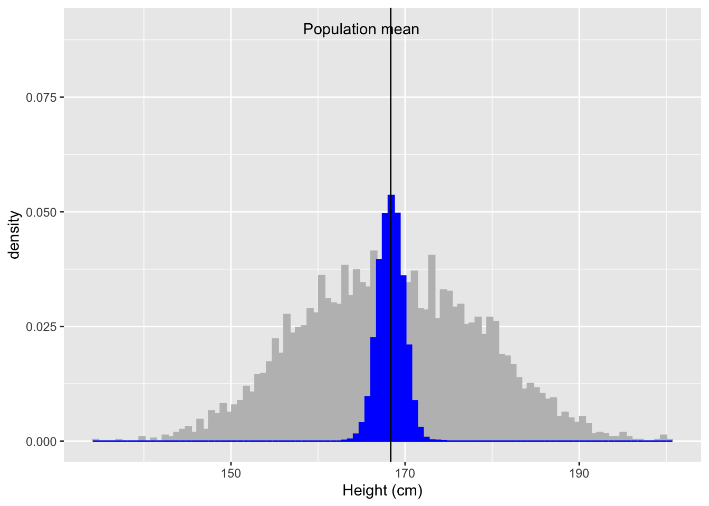
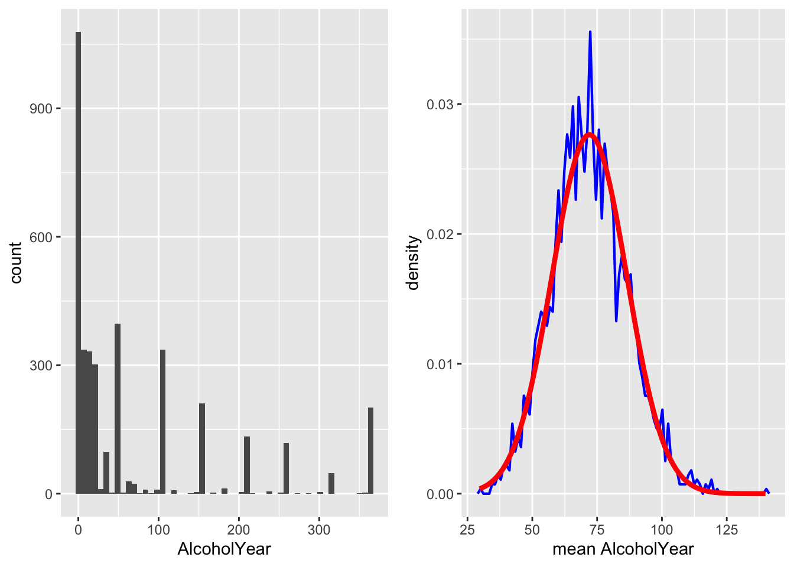

Distinguish between a population and a sample, and between population parameters and sample statistics
Describe the concepts of sampling error and sampling distribution
Compute the standard error of the mean
Describe how the Central Limit Theorem determines the nature of the sampling distribution of the mean
These learning objectives focus on fundamental concepts in statistical sampling that are crucial for understanding statistical inference and data analysis.
Key teaching points:
Focus on practical understanding over mathematical formalism
Build foundation for later statistical concepts
Emphasize real-world applications in business and research
One of the foundational ideas in statistics is that we can make inferences about an entire population based on a relatively small sample of individuals from that population. This concept forms the basis for all statistical sampling and inference.
The chapter introduces:
How to properly select samples from populations
Why sampling works mathematically
How to quantify sampling uncertainty
The mathematical principles that make sampling reliable
Real-world applications and examples
Students should understand that these concepts will be essential for later topics in statistics and data analysis, particularly when we discuss hypothesis testing and confidence intervals.
5.2 Introduction
One of the foundational ideas in statistics is that we can make inferences about an entire population based on a relatively small sample.
Real-World Example: Election Polling
Nate Silver’s predictions:
2008: Correct for 49/50 states
2012: Correct for all 50 states
Used only ~21,000 people to predict 125 million votes
Why This Matters
Cost-effective decision making
Time-efficient research
Practical business applications
The example of Nate Silver’s election predictions demonstrates the power of statistical sampling. Anyone living in the United States will be familiar with the concept of sampling from the political polls that have become a central part of the electoral process. In some cases, these polls can be incredibly accurate at predicting the outcomes of elections.
Silver combined data from 21 different polls, which vary in the degree to which they tend to lean towards either the Republican or Democratic side. Each poll included about 1000 likely voters – meaning that Silver was able to almost perfectly predict the pattern of votes of more than 125 million voters using data from only about 21,000 people, along with other knowledge (such as how those states have voted in the past).
Key points to emphasize:
The remarkable accuracy possible with relatively small samples
How combining multiple samples can improve accuracy
The importance of proper sampling methods
Cost and time benefits of sampling
How different polls may have different biases
The value of combining multiple data sources
The role of historical data and context
Teaching tips:
Ask students to think about other situations where we make inferences about large populations from small samples (e.g., quality control in manufacturing, customer satisfaction surveys)
Discuss how polling has evolved with technology
Consider why some polls fail to predict accurately
Explore the role of sample size in prediction accuracy
5.3 Population vs Sample: Key Terms
Our goal in sampling is to determine the value of a statistic for an entire population using just a small subset:
Population
Entire group of interest
Often too large or impractical to measure completely
Described by parameters (usually unknown)
Example: all registered voters in a region
Sample
Subset used to make inferences
Must be representative
Described by statistics we can calculate
Example: 1000 voters in a poll
Real-world Examples
Customer satisfaction surveys
Quality control in manufacturing
Market research studies
Medical trials
Environmental monitoring
These fundamental concepts form the basis for statistical inference. Our goal in sampling is to determine the value of a statistic for an entire population of interest, using just a small subset of the population. We do this primarily to save time and effort – why go to the trouble of measuring every individual in the population when just a small sample is sufficient to accurately estimate the statistic of interest?
The distinction between population and sample is crucial for understanding statistical methods:
Population:
The entire group about which we want to make inferences
Often too large or impractical to measure completely
Described by parameters that are usually unknown
Examples: all registered voters, all customers, all products manufactured
Sample:
A subset of the population used to make inferences
Must be representative of the population
Described by statistics we can calculate
Examples: 1000 voters in a poll, 100 customers surveyed, 50 products tested
Key teaching points:
Population parameters vs sample statistics
Why we sample instead of measuring entire populations
Importance of representative samples
Cost and practicality considerations
The relationship between sample and population values
The difference between parameters (population) and statistics (sample)
Why we can’t usually know the true population values
Teaching tip: Use concrete examples from students’ experience to illustrate these concepts. For instance, discuss how Netflix might use a sample of users to test new features, or how manufacturers use quality control sampling.
5.4 Representative Sampling
The way we select our sample is critical:
Key Principle
Every member of population should have equal chance of selection
Results should reflect population characteristics
Goal is to avoid systematic differences from population
Common Biases to Avoid
Selection bias (e.g., only Democratic party names)
Voluntary response bias (only those who choose to respond)
Convenience sampling (easily accessible subjects)
Time-of-day bias (e.g., surveys only during business hours)
Impact of Bias
Systematic errors in estimates
Misleading conclusions
Poor business decisions
Wasted resources
Invalid research findings
Representative sampling is crucial for valid statistical inference. The way in which we select the sample is critical to ensuring that the sample is representative of the entire population, which is a main goal of statistical sampling.
A biased sample can lead to incorrect conclusions regardless of its size. For example, if a pollster only called individuals whose names they had received from the local Democratic party, then it would be unlikely that the results of the poll would be representative of the population as a whole.
In general, we would define a representative sample as being one in which every member of the population has an equal chance of being selected. When this fails, then we have to worry about whether the statistic that we compute on the sample is biased - that is, whether its value is systematically different from the population value (which we refer to as a parameter).
Examples of bias:
Political polls using only one party’s contact list
Customer surveys only during business hours
Student research using only their friends
Online surveys that only reach certain demographics
Quality control testing only during day shift
Practical implications:
Need for random selection methods
Importance of considering all population segments
Methods to minimize bias
Cost of proper sampling procedures
Impact of bias on business decisions
Keep in mind that we generally don’t know the population parameter, because if we did then we wouldn’t need to sample! But we will use examples where we have access to the entire population, in order to explain some of the key ideas.
Teaching tips:
Have students identify potential sources of bias in real-world examples
Discuss methods to reduce or eliminate bias
Consider cost-benefit tradeoffs in sampling design
Explore how technology can help or hinder representative sampling
5.5 Sampling Methods
Two fundamental approaches to sampling:
With Replacement
Item returned to population after sampling
Can be selected again
Used in bootstrapping and simulation
Maintains independence between selections
Important for theoretical studies
Without Replacement
Item removed after sampling
Cannot be selected again
More common in practice
More efficient for estimation
Reflects real-world constraints
When to Use Each
With replacement: theoretical studies, bootstrapping
Without replacement: most real-world sampling
Choice affects probability calculations
Impacts statistical properties
The choice between sampling with or without replacement depends on the specific context and goals of the study. It’s important to distinguish between these two different ways of sampling:
Sampling with replacement:
After a member of the population has been sampled, they are put back into the pool
Can be selected again in subsequent draws
Used in theoretical studies and certain statistical techniques
Important for bootstrapping and simulation methods
Allows for independence between draws
Sampling without replacement:
Once a member has been sampled they are not eligible to be sampled again
More common in practical applications
Reflects real-world constraints
More efficient for population estimation
Leads to dependent samples
Key points:
Most real-world sampling is without replacement
With replacement is important for certain statistical techniques
Each method has specific mathematical properties
Connection to later topics like bootstrapping
Impact on probability calculations
Effect on sample independence
Examples to discuss:
Quality control sampling (typically without replacement)
Customer surveys (without replacement)
Population studies (without replacement)
Computer simulations (often with replacement)
Bootstrap resampling (with replacement)
Theoretical probability studies (with replacement)
We will see sampling with replacement again when we discuss bootstrapping in later chapters, where it plays a crucial role in statistical inference.
Teaching tips:
Use physical demonstrations (e.g., drawing cards)
Compare efficiency of methods
Discuss when each method is appropriate
Explore impact on sample size requirements
5.6 Sampling Error
Even with perfect sampling methods:
Definition
Difference between sample statistic and population parameter
Present in all samples
Can be estimated but not eliminated
Natural result of using subset of population
Why It Matters
Affects confidence in results
Influences decision making
Determines required sample size
Impacts research costs
Real-world Implications
Market research confidence levels
Quality control tolerances
Risk assessment accuracy
Medical trial reliability
Survey result interpretation
Sampling error is inevitable in any sample, but understanding it helps us make better decisions. Regardless of how representative our sample is, it’s likely that the statistic we compute from the sample is going to differ at least slightly from the population parameter.
Sampling error is directly related to the quality of our measurement of the population. If we take multiple samples, the value of our statistical estimate will also vary from sample to sample; we refer to this distribution of our statistic across samples as the sampling distribution.
Key concepts:
Difference between bias and random error
How sample size affects sampling error
Relationship to confidence intervals
Impact on business decisions
Nature of sampling variability
Role of random chance
Clearly we want the estimates obtained from our sample to be as close as possible to the true value of the population parameter. However, even if our statistic is unbiased (that is, we expect it to have the same value as the population parameter), the value for any particular estimate will differ from the population value, and those differences will be greater when the sampling error is greater. Thus, reducing sampling error is an important step towards better measurement.
Examples to discuss:
Political polling margins of error
Quality control tolerances
Market research uncertainty
Medical study variation
Environmental sampling
Economic indicators
Teaching tips:
Use simulation to demonstrate sampling variability
Compare different sample sizes
Discuss cost-benefit of reducing error
Connect to real-world decision making
Explore implications for research design
5.7 NHANES Example: Height Data
To demonstrate sampling concepts, we’ll use the NHANES dataset:
NHANES = National Health and Nutrition Examination Survey
Contains comprehensive health data from US population
We’ll treat this dataset as our “entire population”
Looking specifically at adult height measurements
Known population mean: I(mean(NHANES_adult$Height)) cm
Known population SD: I(sd(NHANES_adult$Height)) cm
Important Note: In real life, we rarely know the true population parameters. We’re using NHANES as the population here just to demonstrate sampling concepts.
Let’s look at multiple samples of 50 individuals each:
Code
# create a NHANES dataset without duplicated IDsNHANES <- NHANES %>%distinct(ID, .keep_all =TRUE)# create a dataset of only adultsNHANES_adult <- NHANES %>%filter(!is.na(Height), Age >=18 )# sample 50 individuals from NHANES datasetsample_df <-data.frame(sampnum =seq(5), sampleMean =0, sampleSD =0)for (i in1:5) { exampleSample <- NHANES_adult %>%sample_n(50) %>%pull(Height) sample_df$sampleMean[i] <-mean(exampleSample) sample_df$sampleSD[i] <-sd(exampleSample)}sample_df <- sample_df %>% dplyr::select(-sampnum)kable( sample_df,caption ="Example means and standard deviations for several samples of Height variable from NHANES.")
Example means and standard deviations for several samples of Height variable from NHANES.
sampleMean
sampleSD
167.986
10.096575
167.832
10.765277
168.902
9.141819
168.792
9.552814
169.566
9.870356
This example demonstrates how sample statistics vary from sample to sample using the NHANES dataset as our population. We are going to assume that the NHANES dataset is the entire population of interest, and then draw random samples from this population.
In this example, we know the adult population mean and standard deviation for height because we are assuming that the NHANES dataset is the population. The table shows statistics computed from several samples of 50 individuals from the NHANES population.
Key points to discuss:
Each sample gives slightly different results
Variation is expected and natural
Larger samples tend to be more stable
Importance of sample size
Relationship between sample and population values
Role of random chance in sampling
The sample mean and standard deviation are similar but not exactly equal to the population values. This demonstrates the fundamental nature of sampling - we get close to the true value, but with some variation due to random chance.
Teaching tips:
Ask students to predict how results might change with different sample sizes
Discuss why we see variation between samples
Compare sample values to population parameters
Consider practical implications of sampling variation
Explore how this relates to real-world sampling situations
Note that we will have more to say in the next chapter about exactly how the generation of “random” samples works in a computer.
5.8 Sampling Distribution Visualization
To understand sampling distributions, we’ll:
Take 5000 different samples of 50 individuals each
Compute mean height for each sample
Compare distribution of sample means to population
Key Features:
Blue histogram: Distribution of 5000 sample means
Gray histogram: Original population distribution
Vertical line: True population mean (168.3497 cm)
Sample means cluster around true population mean
Sampling distribution is narrower than population
Shape approximates normal distribution (preview of CLT)
Code
# compute sample means across 5000 samples from NHANES datasampSize <-50# size of samplensamps <-5000# number of samples we will take# set up variable to store all of the resultssampMeans <-array(NA, nsamps)# Loop through and repeatedly sample and compute the meanfor (i in1:nsamps) { NHANES_sample <-sample_n(NHANES_adult, sampSize) sampMeans[i] <-mean(NHANES_sample$Height)}sampMeans_df <-tibble(sampMeans = sampMeans)sampMeans_df %>%ggplot(aes(sampMeans)) +geom_histogram(data = NHANES_adult,aes(Height, ..density..),bins =100,col ="gray",fill ="gray" ) +geom_histogram(aes(y = ..density.. *0.2),bins =100,col ="blue",fill ="blue" ) +geom_vline(xintercept =mean(NHANES_adult$Height)) +annotate("text",x =165,y = .09,label ="Population mean" ) +labs(x ="Height (cm)" )
Warning: The dot-dot notation (`..density..`) was deprecated in ggplot2 3.4.0.
ℹ Please use `after_stat(density)` instead.

This visualization shows the results of taking a large number of samples of 50 individuals, computing the mean for each sample, and looking at the resulting sampling distribution of means.
Components of the visualization:
Blue histogram: sampling distribution of means
Gray histogram: original population distribution
Vertical line: true population mean
We have to decide how many samples to take in order to do a good job of estimating the sampling distribution – in this case we take 5000 samples so that we are very confident in the answer. Note that simulations like this one can sometimes take a few minutes to run, and might make your computer huff and puff.
Key points:
Sampling distribution centers on population mean
Shape is approximately normal (preview of CLT)
Spread is smaller than population distribution
Demonstrates law of large numbers
Shows convergence to true population value
The histogram shows that the means estimated for each of the samples of 50 individuals vary somewhat, but that overall they are centered around the population mean. The average of the 5000 sample means is very close to the true population mean, demonstrating how sampling works in practice.
Teaching tips:
Explain why we need so many samples
Discuss the relationship between sample and population distributions
Connect to real-world sampling situations
Consider what happens with different sample sizes
Explore why the sampling distribution is narrower than the population distribution
5.9 Standard Error of the Mean
The standard error of the mean (SEM) measures the precision of our sample mean. For our NHANES height example:
Population SEM = 1.44
Observed SD of sample means = 1.43
These values are very close, demonstrating how SEM works
The formula and its implications:
Formula: \(SEM = \frac{\hat{\sigma}}{\sqrt{n}}\)
Components
σ̂ = estimated standard deviation (population variability)
n = sample size (under our control)
Square root relationship is crucial
Smaller SEM = better precision
Larger n = smaller SEM
Key Points
Measures precision of sample mean
Critical for sample size planning
Shows diminishing returns with larger samples
Helps balance precision vs cost
Essential for statistical inference
The standard error of the mean (SEM) is a fundamental concept in statistical inference. Later in the course it will become essential to be able to characterize how variable our samples are, in order to make inferences about the sample statistics.
The SEM can be thought of as the standard deviation of the sampling distribution of the mean. To compute it, we divide the estimated standard deviation by the square root of the sample size:
SEM = σ̂/√n
Important aspects:
Relationship between sample size and precision
Why we use estimated standard deviation
Connection to confidence intervals
Role in hypothesis testing
Mathematical basis for inference
Limitations and assumptions
Note that we have to be careful about computing SEM using the estimated standard deviation if our sample is small (less than about 30).
The formula for the standard error of the mean implies that the quality of our measurement involves two quantities:
The population variability (σ̂)
The size of our sample (n)
Because the sample size is the denominator in the formula for SEM, a larger sample size will yield a smaller SEM when holding the population variability constant. We have no control over the population variability, but we do have control over the sample size.
Practical applications:
Determining required sample sizes
Assessing measurement precision
Planning research studies
Quality control limits
Survey design
Clinical trials
Teaching tips:
Work through the formula components
Demonstrate effect of changing n
Connect to real-world applications
Discuss practical limitations
Consider cost-benefit tradeoffs
5.10 Small Sample Considerations
Special attention needed when n < 30:
Statistical Issues
Less reliable estimates
Normal approximations may not hold
Standard errors less trustworthy
Greater chance of misleading results
Practical Solutions
Increase sample size if possible
Use appropriate statistical methods
Report limitations clearly
Consider alternative approaches
Be more conservative in conclusions
Impact on Decision Making
Greater uncertainty in results
Need for larger margins of error
More conservative conclusions
Higher risk of incorrect decisions
May need additional validation
Small samples require special consideration in statistical analysis. The cutoff of n=30 is commonly used because it relates to the Central Limit Theorem and the reliability of our statistical estimates.
Key points: - Why n=30 is often used as a cutoff - Relationship to Central Limit Theorem - When small samples are unavoidable - Methods for handling small samples - Impact on statistical inference - Increased uncertainty in estimates
When working with small samples: - Standard errors are larger - Normal approximations may not hold - Need for alternative statistical methods - Greater chance of misleading results - More conservative conclusions needed - Careful interpretation required
Examples to discuss: - Rare event studies - Expensive measurements - Pilot studies - Clinical trials with rare conditions - Specialized equipment testing - Historical artifact analysis
Teaching tips: - Compare results from different sample sizes - Discuss when small samples are unavoidable - Explore methods for small sample analysis - Consider cost-benefit tradeoffs - Examine real-world examples
5.11 Sample Size Effects
Understanding the square root relationship:
Larger n = Smaller SEM
But diminishing returns
Square root relationship means:
Double n → 1/√2 times smaller SEM
4x n → 1/2 times smaller SEM
9x n → 1/3 times smaller SEM
Cost/benefit tradeoff
Practical Implications
Doubling n improves precision by √2
Need 4x sample size for 2x precision
Each increment costs more
Must balance precision vs resources
Important for research planning
Understanding the relationship between sample size and precision is crucial for research planning. The formula for standard error of the mean tells us something very fundamental about statistical sampling – namely, that the utility of larger samples diminishes with the square root of the sample size.
This means that doubling the sample size will not double the quality of the statistics; rather, it will improve it by a factor of √2. This principle has important implications for research design and resource allocation.
Key points:
Diminishing returns principle
Cost considerations
Practical limitations
Connection to statistical power
Resource allocation decisions
Optimization strategies
Mathematical relationship:
To halve the standard error, need 4x sample size
To reduce SE by 1/3, need 9x sample size
Each increment of precision costs more
Must balance precision vs resources
Examples:
Research budget allocation
Quality control sampling
Survey design decisions
Clinical trial planning
Market research studies
Environmental monitoring
In a later section, we will discuss statistical power, which is intimately tied to this idea. The relationship between sample size and precision is crucial for:
Determining minimum sample sizes
Budgeting research projects
Planning data collection
Justifying research costs
Optimizing resource allocation
Teaching tips:
Use numerical examples
Demonstrate diminishing returns
Discuss real-world constraints
Consider cost-benefit analysis
Explore practical limitations
5.12 Central Limit Theorem: Basics
A fundamental principle of statistics:
Definition
Sampling distribution of mean becomes normal
Regardless of population distribution
As sample size increases
Key to statistical inference
Key Implications
Works for any distribution shape
Requires sufficient sample size
Foundation for statistical inference
Explains many natural phenomena
Historical Context
Named after Gaussian distribution
Developed over centuries
Fundamental to modern statistics
Enables many statistical methods
The Central Limit Theorem (CLT) is one of the most important concepts in statistics. It tells us that as sample sizes get larger, the sampling distribution of the mean will become normally distributed, even if the data within each sample are not normally distributed.
First, let’s discuss the normal distribution. It’s also known as the Gaussian distribution, after Carl Friedrich Gauss, a mathematician who didn’t invent it but played a role in its development. The normal distribution is described in terms of two parameters: - Mean (location of the peak) - Standard deviation (width of the distribution)
The bell-like shape of the distribution never changes, only its location and width. The normal distribution is commonly observed in data collected in the real world, and the central limit theorem gives us some insight into why that occurs.
Warning: Using `size` aesthetic for lines was deprecated in ggplot2 3.4.0.
ℹ Please use `linewidth` instead.
Code
plot_grid(p1,p2)

This example demonstrates the CLT in action using the AlcoholYear variable from the NHANES dataset, which is highly skewed. The visualization shows:
Left: Original skewed distribution
Right: Normal sampling distribution
The original distribution is, for lack of a better word, funky – and definitely not normally distributed. Yet when we look at the sampling distribution of the mean for this variable, obtained by repeatedly drawing samples of size 50 from the NHANES dataset and taking the mean, we see something remarkable. Despite the clear non-normality of the original data, the sampling distribution is remarkably close to the normal.
Key points:
Transformation to normality
Effect of sample size
Practical implications
Why this matters
Role of sample size
Universality of the theorem
The CLT is important for statistics because:
Allows us to safely assume normal sampling distributions
Enables use of normal-theory statistical techniques
Explains why normal distributions are common
Supports statistical inference methods
Real-world example: The height of any adult depends on a complex mixture of their genetics and experience; even if those individual contributions may not be normally distributed, when we combine them the result is a normal distribution.
Teaching tips:
Ask students to predict what would happen with different sample sizes
Discuss why the transformation occurs
Connect to real-world examples
Explore implications for inference
Consider practical applications
5.14 Summary
Key Takeaways
Population vs sample distinction
Importance of sample size
CLT implications
Practical Applications
Business decision making
Research design
Quality control
Common Pitfalls to Avoid
Small sample assumptions
Biased sampling
Overgeneralization
Reinforce main concepts and their practical applications. This lecture has covered fundamental concepts in statistical sampling that form the basis for statistical inference.
Key points:
Importance of proper sampling
Role of sample size
Real-world applications
Common mistakes to avoid
Mathematical foundations
Practical implications
Core concepts reviewed:
Population vs Sample
Distinction between parameters and statistics
Importance of representative sampling
Role of random selection
Sampling Error
Natural variation in samples
Relationship to sample size
Impact on conclusions
Standard Error
Mathematical foundation
Relationship to sample size
Practical implications
Central Limit Theorem
Fundamental importance
Practical applications
Connection to normal distribution
Encourage students to think about:
Applications in their field
Future coursework connections
Research applications
Real-world sampling situations
Statistical inference foundations
Decision-making under uncertainty
Common pitfalls to avoid:
Biased sampling methods
Insufficient sample sizes
Overgeneralization of results
Ignoring sampling error
Misinterpreting variation
5.15 Suggested Readings
“The Signal and the Noise” by Nate Silver
Practical sampling applications
Real-world prediction challenges
Data-driven decision making
“The Signal and the Noise” by Nate Silver provides excellent real-world examples of sampling and prediction. The book explores:
![]()